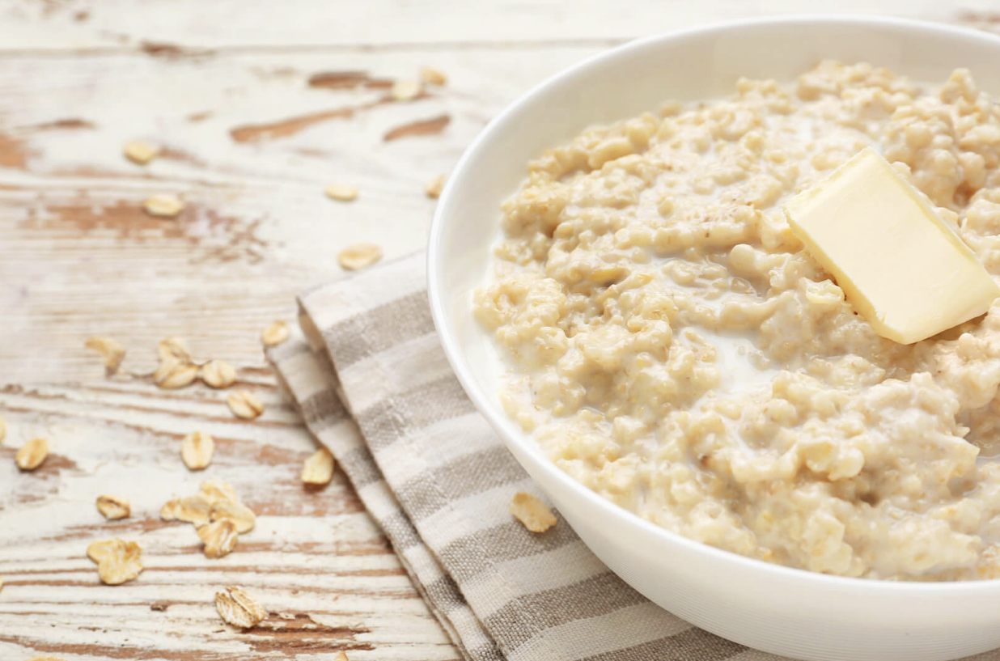

Colazioni nel mondo...
...le più HEALTY
La colazione indiana ha come cibo principale il roti, un pane tirato molto sottilmente, servito con abbondanza di yogurt e frutta. Secondo i dietologi questa colazione è particolarmente sana perché il roti è preparato con farina integrale e contiene tante fibre
1° INDIA
2° ISLANDA
La colazione tipica dell'Islanda è una ciotola di porridge preparata con fiocchi d'avena: ‘’L'avena è ricca di fibre - spiega la studiosa Chloe Miles - che aiutano la digestione e contengono una proteina che aiuta a ridurre i livelli di colesterolo’’

La colazione in Corea del Sud è a base di riso, zuppa, kimchi, carne o pesce. ‘’I cibi sono poco grassi e le proteine aiutano a farci sentire pieni - spiega il dietologo Frankie Phillips -. Questi alimenti forniscono anche una gamma di vitamine B e minerali come zinco e ferro’’